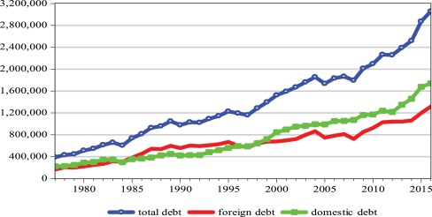

-
Proposal Presentation
A project proposal was presented to the panel in order to explain the impact of the research and to attaract potential investors.
Marks Allocated: 6
-
Proposal Report
A comprehensive document was submitted to the research panel to tell them about what our research was about.
Marks Allocated: 6
-
Progress Presentation I
Progress Presentation I assesses the project's status at 50% completion, helping to identify any design or requirement issues and gaps in the process.
Marks Allocated: 15
-
Research Paper
Explain how your work adds to what is already known, acknowledging the contributions of others in a clear and straightforward manner.
Marks Allocated: 10
-
Progress Presentation II
Progress Presentation II assesses the project when it's 90% complete, and it includes a poster presentation that provides an overview of the entire project.
Marks Allocated: 18
-
Final Presentation and Viva
Final Presentation assesses how we can verify the research and individual viva is held to assess each members contribution individually.
Marks Allocated: 20
-
Project Website
Final Presentation assesses how we can verify the research and individual viva is held to assess each members contribution individually.
Marks Allocated: 2
-
Research Logbook and Progress Reports
The project status is confirmed by checking the project logbook, which also includes status documents 1 and 2.
Marks Allocated: 4
-
Final Report
The project status is confirmed by checking the project logbook, which also includes status documents 1 and 2.
Marks Allocated: 19
Project Scope
Litreature Survey

Figure 1: Variation of foreign debt, domestic debt and total debt with time.
Since gaining independence in 1948, the Sri Lankan economy has encountered numerous challenges. One of the most significant issues has been fiscal indiscipline, leading to a substantial gap between government revenue and expenditure, commonly referred to as the 'budget deficit.' Starting from 1990, this budget deficit has seen a significant increase. In fact, according to reports from the Central Bank, since 1990, a surplus in the primary account has only been achieved twice [1]. This suggests that the government's revenue is often insufficient to cover expenses, excluding interest payments, further exacerbating the budget deficit.
Tatiana Vasylieva, Sergij Lyeonov, Oleksii Lyulyov, and Kostiantyn Kyrychenko conducted a comprehensive study on the role and impact of macroeconomic stability on economic growth in European countries for the period spanning from 2000 to 2016 [4]. Utilizing a modified Cobb–Douglas production function, their research findings concluded that a 1% improvement in macroeconomic stability has a more positive influence on GDP growth compared to foreign direct investments. This underscores the importance of implementing appropriate macroeconomic policies by governments to foster economic growth in the studied countries.
For instance, Nguyen Tung (2020) [5] investigated the effects of fiscal deficits on economic growth in an emerging economy using data from Vietnam. The study employed an Error Correlation model to assess the impact of fiscal deficits on economic growth, revealing a negative and significant influence in both the short and long run. Cebula (1995) [6] explored the impact of budget deficits on the U.S.economy's growth using quarterly data from 1955 to 1992 and found that budget deficits led to a reduction in the economic growth rate. The study also confirmed that income tax had detrimental effects on economic growth. This implies that an increase in the budget deficit leads to a higher tax ratio, generating additional revenue to offset previous deficits, thereby restraining economic growth.
References
[1] Central Bank of Sri Lanka, “Summary of Government Fiscal Operations (1990 to Latest).”
[4] T. Vasylieva, S. Lyeonov, O. Lyulyov, and K. Kyrychenko, “Macroeconomic stability and its impact on the economic growth of the country,” Montenegrin Journal of Economics, vol. 14, no. 1, 2018, doi: 10.14254/1800-5845/2018.14-1.12.
[5] Le Thanh Tung, “effects of fiscal deficits on economic growth in an emerging economy”.
[6] Richard Cebula, “The impact of federal government budget deficits on economic growth in the united states: an empirical investigation,1955-1992.”
Research Gap
The current literature, as discussed, primarily focuses on identifying the impact of fiscal deficits or budgetary sources on macroeconomic variables such as inflation and economic growth. Its goal is to comprehend the causes of macroeconomic instability and determine whether these factors have a negative or positive effect on the economy. While the results of these studies do indicate whether fiscal deficits, money printing, or taxation are detrimental or beneficial to the economy, they often lack a systematic approach to mitigate harm or maximize benefits. Hence, it can be argued that the current literature falls short in providing systematic solutions to maintain macroeconomic stability. Therefore, there is a gap in the existing literature that needs to be filled with systematic approaches to ensure and enhance macroeconomic stability. Furthermore, as we found, there are not many studies done in the Sri Lankan context when it comes to identifying the impact of budgetary sources on the economy, hence there is a gap in the existing literature to come up with a study to identify the impact of budgetary sources on the economy in the Sri Lankan context.
Research Problem
The prevailing economic crisis in Sri Lanka is believed to be caused by the balance of payment issue and the macroeconomic instability resulting from the substantial fiscal deficit. Consequently, in response to this crisis, the current authorities of the country have decided to negotiate a staff-level agreement with the International Monetary Fund (IMF). This agreement entails a fiscal consolidation program aimed at achieving and maintaining macroeconomic stability in the short and long term. It involves reducing the fiscal deficit over time and restructuring public debt. Within this program, the fiscal deficit is acknowledged as the primary contributor to macroeconomic instability. It's important to note that the new Central Bank Act, proposed as part of this agreement, strictly prohibits monetary financing for budgetary needs, effectively closing the door on the Sri Lankan Government's ability to finance the fiscal deficit. However, as discussed in the literature review, there are dissenting voices among economists who argue that the fiscal deficit may not be as detrimental as implied. Some studies in the existing literature even conclude that the fiscal deficit can have a positive impact on economic growth. Additionally, it's worth noting that a majority of countries worldwide operate with fiscal deficits.
Given these considerations, could there be an alternative systematic solution to achieve and sustain macroeconomic stability by approaching this crisis from a different perspective? One could argue that rather than treating the fiscal deficit as an inherently negative factor, it could be considered the 'new norm.' This alternative viewpoint could lead to the encouragement of borrowing, including monetary financing for budgetary purposes, rather than their exclusion.
In this alternative approach, efforts could be made to minimize the potential risks associated with the fiscal deficit, monetary financing, borrowing, or taxation, as outlined in the existing literature, while maximizing the potential benefits highlighted by dissenting economists and select studies within the literature.
Product Demonstration Video
Research Objective
Main Objective
This study focuses on preserving macroeconomic stability by using a systematic solution to optimize budgetary source amounts to finance government expenditure in order to minimize the risk associated with it while maximizing the benefit associated with it. Hence, the identification of the optimum budgetary source amount for a given expenditure amount is the main objective of the study.
Sub Objective
The budgetary source amounts have to be predicted for the following years to be optimized later. Predictive models will have to be used for this purpose. In order to optimize the budgetary sources, the relationship between those and the considered macroeconomic variables has to be identified. Using the relationship, the budgetary sources such as monetary financing can be optimized based on given targets. A web application has to be developed to provide a user interface to input defined targets based on which the budgetary sources are optimized.
Methodology
This study focuses on generating optimized ratios of budgetary sources for a given expenditure amount. While finding the optimum amount, the feasibility factor is taken into consideration, therefore upper and lower thresholds need to be defined in this study. As a general scenario, in this study, the upper threshold is taken as 150% of the previous year's amount and the lower threshold is 50% of the previous year’s amount. This can be changed accordingly. Because of this feasibility constraint, without assigning random values of budgetary sources to the optimization algorithm the study focuses on assigning predicted amounts based on the historical data using time series models. As this study only focuses on finding the optimum monetary financing amount, the documentation explains the methodology of predicting the monetary financing amount for the following years
Time Series Models
Four time series modes including three statistical models and a neural network model, are used to predict the monetary financing for the following years and the model with the best accuracy is selected for predictions. The dataset for the models was acquired from the Central Bank of Sri Lanka (CBSL) [19].
Monetary financing is technically referred to as borrowings from the Central Bank. When a government needs money to cover its budget deficit (i.e., when its expenses exceed its revenues), it may issue government securities like bonds or bills to the financial market. These securities are essentially IOUs from the government, and investors can purchase them. IOU stands for "I Owe You." It is a written acknowledgment of a debt or a promise to pay a specified amount of money to another party. In the case of monetary financing, the central bank steps in and buys these government securities directly from the government using newly created money. This is different from a regular bond market transaction where the securities are sold to private investors [20]. Therefore, from the dataset, the ‘Net Credit granted to the Government by Central Bank’ column is taken as the monetary financing amount used to finance the government's expenditure over the years.
The monetary financing dataset consists of monthly data hence there is no requirement to expand the dataset by dividing it quarterly. However, the data format of the ‘Month’ column is not consistent, hence it is pre-processed. The ‘Net Credit granted to the Government by Central Bank’ column is standardized in order to make it easy to compare the Mean Squared Error (MSE) values of the models later. Standardization of data is used as a data pre-processing action to improve the performance of machine learning models because it helps to take all the variables into a single scale removing different scales. However, in univariate time series modelling where a single column of data exists this does not make a difference [21]. After pre-processing the data, it is checked to understand its behaviour and it is understood that 1 it has a seasonality and trend.
SARIMA Model
A Seasonal Autoregressive Integrated Moving Average (SARIMA) model is a sophisticated time series forecasting method that builds upon the concepts of Autoregressive Integrated Moving Average (ARIMA) models. SARIMA models are particularly useful when dealing with time series data that exhibit seasonality, trends, and other complex patterns. When ARIMA is used and the data is non-stationary, it has to be differentiated to make it stationary whereas SARIMA is believed to be with non-stationary data by itself. However, at times it might not be the case. In this study, it is proven that the SARIMA is not dealing with it by itself. Hence, the time series is differentiated first and utilizes ACF, PACF plots, and the Autoarima function to derive (p, d, q) (P, D, Q) m values. The Autoarima function appears to be giving better values when MSE values are checked. When the SARIMA model is trained with standardized data, the MSE value is high compared to the value when it is trained without standardized data. Hence, for the SARIMA model, the data is not standardized.
LSTM model
Long Short-Term Memory (LSTM) is a type of recurrent neural network (RNN) designed for time-series predictions. It excels at capturing long-term dependencies and patterns in sequential data, making it effective for tasks like stock price forecasting, natural language processing, and more. LSTMs use memory cell and gating mechanisms to control the flow of information, making them capable of learning and remembering patterns over extended sequences, which is challenging for traditional RNNs. The benefit of using LSTMs for time series forecasting is that they can capture complex patterns, including seasonality, trends, and irregularities, without relying on simplifying assumptions. Standardized data was utilized for the LSTM model unlike in SARIMA model. The model appears to be functioning very well with a good MSE value.
FB Prophet Model
Prophet is a forecasting tool developed by Facebook for time series predictions. It is designed to handle daily observations that display patterns on different time scales, including holidays and special events. Prophet is user-friendly and requires minimal data pre-processing, making it a valuable tool for quick and accurate time series forecasting in various domains. It is believed to handle seasonality automatically, however, in this study, it appears that it does not handle the seasonality by itself. Hence, the seasonality is given manually as 12 since it is visible that the time series has seasonality 12 months apart. Standardized data was utilized for this model.
Exponential Smoothing (Holt-Winters) Model
The Holt-Winters Exponential Smoothing model is another popular method for time series forecasting. It considers three components in the data: level (average), trend (directional movement), and seasonality (repeating patterns). By exponentially weighting past observations, it adapts to changes in these components over time. This model is effective for capturing and predicting data with consistent patterns and trends, making it valuable for forecasting in business and economics. Standardized data was used for this model.
ARIMA Model
ARIMA, or AutoRegressive Integrated Moving Average, is a powerful time series modeling technique, especially valued in economics. It combines three key components: AutoRegression (AR) - which considers past values to predict future ones, Moving Average (MA) - which analyzes past prediction errors, and Integration (I) - a differencing process to make a series stationary. What makes ARIMA special is its ability to capture complex temporal patterns, trends, and seasonality in economic data. This versatility enables economists to model and forecast a wide range of economic phenomena, from stock prices to GDP trends, making it a fundamental tool for understanding and predicting economic fluctuations and trends [22].
GARCH Model
GARCH, or Generalized Autoregressive Conditional Heteroskedasticity, is a specialized time series model widely used in economics for modeling and forecasting financial volatility. What makes GARCH special is its ability to capture the dynamic nature of volatility in financial markets, where the level of risk changes over time. Unlike traditional models that assume constant volatility, GARCH recognizes that volatility clusters during turbulent periods and subsides during calm ones. This feature is crucial in economics because it allows analysts to better understand and predict the risk associated with financial assets, aiding in risk management, option pricing, and portfolio optimization. In essence, GARCH is a powerful tool for modeling the complex and changing nature of uncertainty in economic and financial data [23].
Using the best model for budgetary source amounts are predicted for the following years. Subsequently, the predicted budgetary source amounts have to be optimized. In this study, a simulation and an optimization algorithm are used to do the optimization. In the simulation random set of budgetary source amounts and relevant macroeconomic variable values are generated according to given relationships and constraints. Considering the feasibility factor, in this study, the budgetary source amount of the following year cannot be lower or greater than a certain threshold of the previous year’s amount of that respective source. The upper threshold is taken as 150% of the previous year’s amount and the lower threshold is 50% of that amount. This threshold can be changed accordingly. Random source amounts are generated using the simulation according to this constraint.
The focus of this study is to optimize the predicted source amounts such that Inflation and Debt- GDP ratio targets are met. Only inflation and Debt to GDP ratio are considered when optimizing the budgetary sources because by taking other macroeconomic indicators such as Interest Rates, Unemployment Rate, and Exchange Rate the study will have to consider broader concepts and define equations that could increase the uncertainty of the results. Most importantly this will take time consequently the research will not be able to be completed within the given period. If a certain amount of monetary financing, tax, foreign borrowing, and domestic borrowing meet the predefined inflation and debt-to-GDP ratio targets, that is taken as the optimum set of amounts to finance a given expenditure amount. To do this the relationship between budgetary sources and two macroeconomic indicators have to be identified and included in the simulation. Subsequently, using the identified relationships Inflation and Debt-GDP values have to be calculated through each iteration for given budgetary source amounts.
Debt Sustainability Formula

The Debt-GDP ratio formula is defined as above. Debt-GDP ratio formula includes two additional variables apart from the predicted amounts: Current Aggregate Public Debt and GDP. Since the behavior of GDP and Current Aggregate Public Debt for the following years is unknown to us, they have to be predicted. Hence, separate SARIMA models for Current Aggregate Public Debt and GDP are built. The reason behind the decision to choose the SARIMA model is that SARIMA is better at identifying trends based on seasonality which is showcased during the pre-processing stage of the data. It was visible that the time series has a seasonality component, hence the SARIMA is selected for its prediction.
Relationship of Inflation and Budgetary Sources
During the investigation, there was no formula that defined the relationship between inflation and budgetary sources. Yet, defining Inflation and Budgetary sources through a formula is an important aspect of the research since it is one of the targets that is used to optimize the amounts, therefore a statistical formula is defined considering the association between inflation and budgetary sources. Following regression models are built and the model with the best accuracy is taken to derive the formula. Only linear regression models are used because otherwise coefficients cannot be derived from non-linear regression models.
The methodology of building an equation using Regression Analysis was discussed by Gerhard Tintner in the article "SOME APPLICATIONS OF MULTIVARIATE ANALYSIS TO ECONOMIC DATA". As the author concludes “the choice of whether to use a deterministic or stochastic model depends on the specific problem being studied." In some cases, a deterministic model may be sufficient. However, in other cases, a statistical model may be necessary to capture the complexity of the economic system”. Statistical linear models were used to construct weights or coefficients in order to create an association equation between budgetary sources and inflation. Four regression models were created in accordance with the specification, and the final model was obtained by comparing them to MSE values. Ridge, Linear Regression, Support Vector Regression (SVR), and Elastic Net. These algorithms were chosen after consideration of their linearity and their propensity to respond to time series data.
Support Vector Regression Model
According to the research financial time series forecasting using independent component analysis and support vector regression SVR is considered a novel neural network algorithm on top of statistical learning theory and the paper states that this algorithm is getting a lot of attention to solve nonlinear estimation problems. One huge barrier to making this model a win is to make the data well pre-processed as the algorithm is highly vulnerable to noisy data. Also, some other researchers and journals strongly believe that Support Vector family algorithms could be widely used in the future by providing its capabilities [2][3].
The Ridge Regression Model
The Ridge regression model is used to analyze data that suffer from multicollinearity. It performs L2 regulation and reduces the impact of correlated features on the coefficients [5]. As experiment research to identify the relationships of budgetary sources with inflation, this algorithm is modeled and compared for the economic data.
Linear Regression Model
The linear Regression model is a model that is widely used to explore the relationships between the dependent and the independent variables. Identifying the weights(coefficients) is the primary goal of this part of the research so that this model could be a feasible approach to use and compare with the available economic data [6].
he Elastic Net Model
In the Elastic Net model, in statistics, and the fitting of linear or logistic regression models, the elastic net is a regularized regression method that linearly combines the L1 and L2 penalties of the lasso and ridge methods [4].
The Ridge Model
The Ridge model is a model tuning method used to analyze data that suffers from multicollinearity. Also, the Ridge model is considered an extension of a Linear regression model. Also, it’s a model that has been well used by wiser professionals to do correlation analysis for economic data [7].

Simulation
This study planned to find a way to optimize the budgetary source amounts through a single algorithm or simulate the target amounts and filter based on the targets defined. During the research study process, many pieces of literature mentioned a simulation named “Monte Carlo Simulation” [24] which had some publications on stock profile optimization, economic growth forecasting, and obtaining ratios using Monte Carlo Simulation. In further investigating simulation and optimization process algorithms another simulation method known as “Agent-Based Modelling” which has been used in economics-based research found [25].
Yet, by comparing these two methods, Monte Carlo Simulation is in many publications in the economic domain than Agent-Based Modelling although Agent-Based Modeling is emerging currently in the economics domain, while Monte Carlo Simulation is commonly discussed in the economics domain. This research started to focus on Monte Carlo Simulation to reach the research objective of this paper because Agent-Based Modelling depends on the agent and its interaction with the environment which is commonly used in gaming and environments that are solely based on the agent’s interaction, which is not the purpose of this study. In contrast, this study is more about the probabilistic approach where the Monte Carlo Simulation is more effective.
In the Mote Carlo Simulation, the set of predicted budgetary source amounts, formulas to produce Inflation and debt-to-GDP ratio values for a given set of budgetary sources, the Current Aggregate Public Debt and GDP values are extracted from SARIMA models and will be fixed during the entire simulation process.
Subsequently, the predicted budgetary source amounts are initialized to minimum and maximum; Minimum is considered as 50% of the predicted values, while Maximum is considered as 150% of the predicted budgetary source amount. This is the feasibility constraint explained before.
The simulation algorithm concept is defined as follows; Simulation is set to run for 100,000 iterations, and in each iteration, budgetary source amounts are initialized within the defined thresholds. Subsequently, the amounts are passed to inflation and debt sustainability formulas and obtain the respective inflation and debt-to-GDP ratios. By the end of the iterations, there will be 100,000 records with inflation and debt-to-GDP ratios with respective budgetary source amounts.
Optimization
This section focuses on filtering the generated data frame based on the defined targets. In this study, the inflation rate and debt-GDP ratio are taken as inputs and subsequently, the result will be given. Just giving the inflation rate will not provide any results since there might not be inflation rates that are identical to that. Therefore, in the algorithm, the inflation target is taken as a range, where the lower bound is 0.01 less than the input ratio while the upper bound is 0.01 more than the input ratio. Based on that set of budgetary source amounts, inflation rates, and debt-GDP ratio will be generated and that will be further filtered by considering the minimum inflation and Debt-GDP ratio amounts. This helps to derive the optimum budgetary source amounts for that particular year. Using those amounts the proportion of budgetary sources can be derived and subsequently it can be used to identify the optimum budgetary source amounts including monetary financing amount for a given expenditure amount. Below is the summarized diagram of the entire optimization process.

Technologies Used


Milestones
Timeline
Downloads
Documents
The documents that were used for this research are given below.
Presentations
The presentations that were used for this research are given below.
About Us
Meet Our Team

Mr. Vishan Jayasinghearachchi
Supervisor
Sri Lanka Institute of Information Technology
Department
Information Technology


Contact Us